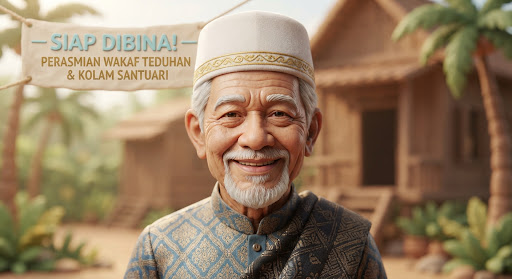

✨
🎉
⭐
🎊
Tahniah! Wakaf Teduhan & Kolam Santuari Rasmi Dibuka! 🏡✨
Seluruh warga Kampung Wira berhimpun meraikan terbinanya anjung silaturahim dan kolam teratai yang jernih berseri!
stars
Ganjaran
+300 XP
monetization_on
Syiling
+500 Desa
domain_verification
Kemajuan
5/6 Plot

✂️ Reben Dipotong
🎊 Sorakan Desa
🌸 Teratai Berseri
5
Wakaf Teduhan & Santuari Teratai
Kawasan Adab, Santai & Silaturahim Tahun 1

Tok Ketua & Ustazah Melur
Wali Pembangunan Kampung Wira“Syabas anakanda Wira! Berkat kerajinanmu menuntut ilmu dan amalan ihsan, Plot 5 kini menjadi anjung silaturahim paling damai di Kampung Wira. Pintu anjung kini terbuka luas untuk semua!”
volunteer_activism
Nilai Murni: Wakaf dan berbuat baik kepada sesama manusia serta alam mendatangkan barakah dan kebahagiaan berpanjangan.
card_membership
Semua Dituntut! 🎁
4 Ganjaran Khas Perasmian
savings
+80 Syiling Harian
Hasil peti wakaf bertambah setiap fajar!
check_circle Aktif Kekal
favorite
+35% Keriangan
Warga desa gembira bercerita di tepi kolam.
check_circle Bonus Wilayah
workspace_premium
Arkitek Cilik Desa
Lencana profil wira berprestij Tahun 1.
military_tech Lencana Wira
vpn_key
Kunci Tapak Plot 6
Akses laluan Makmal Rimba kini terdedah!
lock_open Siap Terbuka
6
Misi Pembinaan Seterusnya
Makmal Sains Rimba (Plot 6)
Syarat: Aras 4 Desa & 600 Syiling
3/4 Cabaran Selesai